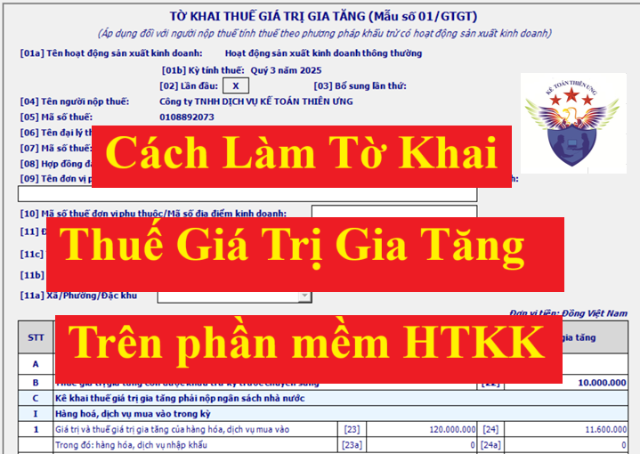
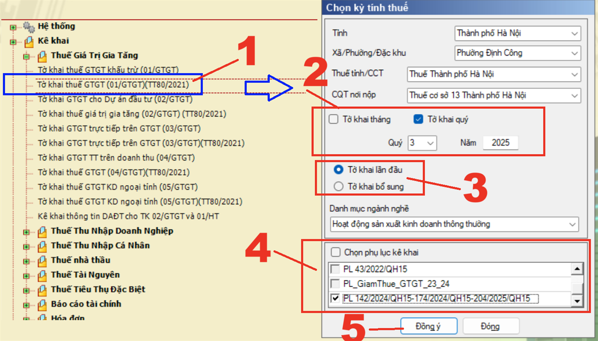
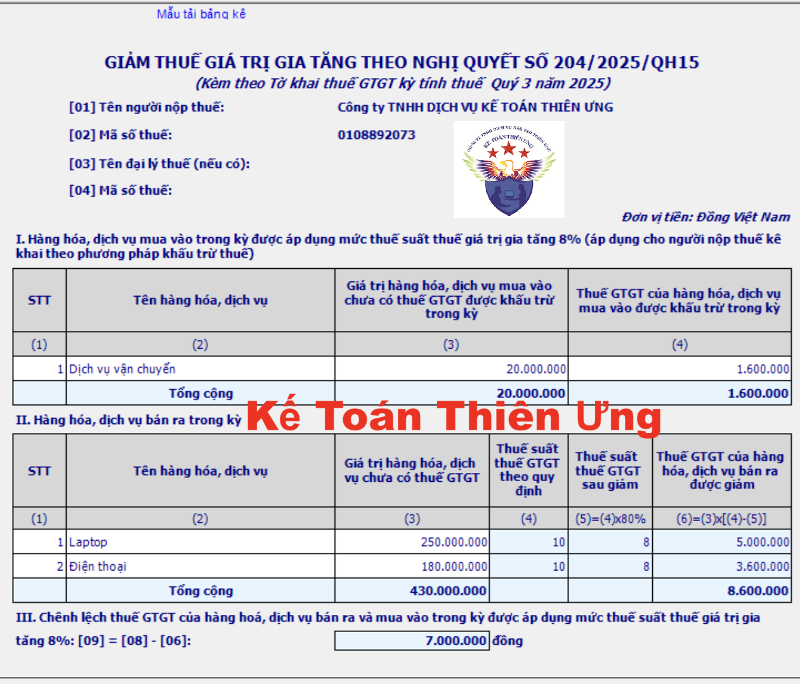

Cách lập tờ khai thuế GTGT mẫu 01/GTGT theo quý và tháng; Hướng dẫn lập tờ khai thuế giá trị gia tăng trên HTKK, cách lập tờ khai thuế GTGT theo phương pháp khấu trừ chi tiết từng chỉ tiêu trên tờ khai.
Tờ khai thuế GTGT mẫu 01/GTGT là tờ khai thuế GTGT dành cho những doanh nghiệp kê khai thuế GTGT theo phương pháp khấu trừ. 
Sau đây Công ty Kế toán Diệu Tâm sẽ hướng dẫn cách lập tờ khai thuế GTGT mẫu 01/GTGT trên phần mềm HTKK mới nhất, chi tiết từng chỉ tiêu:
Bước 1: Chọn tờ khai thuế GTGT
Đăng nhập vào phần mềm HTKK:
-> Chọn: "Thuế giá trị gia tăng"
-> Chọn: “Tờ khai thuế GTGT (01/GTGT)(TT80/2021)” (1)

Bước 2: Chọn kỳ tính thuế:
Phần mềm đang tự động hiện thị theo thông tin khai báo ban đầu của doanh nghiệp trên phần mềm HTKK, nhưng cho phép sửa
Chi tiết về quy định nơi nộp hồ sơ khai thuế GTGT thì các bạn xem tại đây: Địa điểm nộp hồ sơ khai thuế GTGT Theo Nghị định 126, Thông tư 80
(2) Chọn kỳ kê khai thuế GTGT theo tháng hay theo quý:
Thuế GTGT là loại thuế có kỳ kê khai theo tháng hoặc theo quý
Cách xác định kỳ kê khai thuế GTGT được thực hiện theo quy định điểm a khoản 1 Điều 8 của Nghị định 126/2020/NĐ-CP và Điều 9 của Nghị định 126/2020/NĐ-CP như sau:
- Khai thuế giá trị gia tăng theo quý áp dụng đối với:
+ Doanh nghiệp có tổng doanh thu bán hàng hoá và cung cấp dịch vụ của năm trước liền kề từ 50 tỷ đồng trở xuống thì được khai thuế giá trị gia tăng theo quý.
+ Doanh nghiệp mới thành lập
+ Trường hợp Doanh nghiệp mới bắt đầu hoạt động, kinh doanh thì được lựa chọn khai thuế giá trị gia tăng theo quý. Sau khi sản xuất kinh doanh đủ 12 tháng thì từ năm dương lịch liền kề tiếp theo năm đã đủ 12 tháng sẽ căn cứ theo mức doanh thu của năm dương lịch trước liền kề (đủ 12 tháng) để thực hiện khai thuế giá trị gia tăng theo kỳ tính thuế tháng hoặc quý.
=> Lưu ý: Đối với các công ty đủ điều kiện kê khai thuế GTGT theo quý thì được quyền lựa chọn kê khai thuế GTGT theo tháng hoặc theo quý
- Khai thuế giá trị gia tăng theo tháng áp dụng đối với:
+ Doanh nghiệp có tổng doanh thu bán hàng hoá và cung cấp dịch vụ của năm trước liền kề trên 50 tỷ đồng.
+ Doanh nghiệp có tổng doanh thu bán hàng hoá và cung cấp dịch vụ của năm trước liền kề từ 50 tỷ đồng trở xuống nhưng lựa chọn khai thuế giá trị gia tăng theo tháng.
Lưu ý:
+ Người nộp thuế có trách nhiệm tự xác định thuộc đối tượng khai thuế theo quý để thực hiện khai thuế theo quy định
+ Người nộp thuế đáp ứng tiêu chí khai thuế theo quý được lựa chọn khai thuế theo tháng hoặc quý ổn định trọn năm dương lịch.
Xem thêm: Cách xác định kê khai thuế GTGT theo tháng hay quý.
(3) Chọn trạng thái tờ khai là "Lần đầu" hay "Bổ sung":
Tích chọn “Tờ khai Lần đầu” nếu đây là lần đầu doanh nghiệp lập tờ khai thuế GTGT cho kỳ tính thuế đó
Trường hợp người nộp thuế phát hiện hồ sơ khai thuế lần đầu đã nộp cho cơ quan thuế có sai, sót thì kê khai bổ sung theo số thứ tự của từng lần bổ sung.
Lưu ý: Kể từ thời điểm Hệ thống Etax có Thông báo chấp nhận hồ sơ khai thuế đối với Tờ khai thuế “Lần đầu”, các Tờ khai thuế tiếp theo của cùng kỳ tính thuế, cùng hoạt động sản xuất kinh doanh là tờ khai “Bổ sung”. Doanh nghiệp phải nộp Tờ khai “Bổ sung” theo quy định về khai bổ sung.
Chọn danh mục ngành nghề:
Phần mềm đang để mặc định lựa chọn "Hoạt động sản xuất kinh doanh thông thường"
Nếu doanh nghiệp bạn đang kê khai thuế GTGT cho các hoạt động khác như:
(2) Hoạt động xổ số kiến thiết, xổ số điện toán.
(3) Hoạt động thăm dò khai thác dầu khí.
(4) Dự án đầu tư cơ sở hạ tầng, nhà để chuyển nhượng khác địa bàn tỉnh nơi đóng trụ sở chính.
(5) Nhà máy sản xuất điện khác địa bàn tỉnh nơi đóng trụ sở chính.
Thì thực hiện chọn lại theo thực tế hoạt động doanh nghiệp muốn kê khai
Lưu ý: Trường hợp người nộp thuế có nhiều hoạt động sản xuất kinh doanh nêu trên thì lập nhiều tờ khai thuế, mỗi tờ khai, người nộp thuế lựa chọn một hoạt động sản xuất kinh doanh tương ứng với thông tin kê khai.
(4) Chọn phụ lục đính kèm tờ khai (Nếu có):
Nếu doanh nghiệp của các bạn có phát sinh các hoạt động liên quan đến các phụ lục dưới đây thì thực hiện tích chọn vào phụ lục đó để kê khai:
+ Phụ lục bảng phân bổ số thuế giá trị gia tăng phải nộp cho các địa phương nơi được hưởng nguồn thu đối với hoạt động sản xuất thủy điện mẫu số 01-2/GTGT ban hành kèm theo phụ lục II Thông tư số 80/2021/TT-BTC.
+ Phụ lục bảng phân bổ số thuế giá trị gia tăng phải nộp cho các địa phương nơi được hưởng nguồn thu đối với hoạt động kinh doanh xổ số điện toán mẫu số 01-3/GTGT ban hành kèm theo phụ lục II Thông tư số 80/2021/TT-BTC.
+ Phụ lục bảng phân bổ thuế giá trị gia tăng phải nộp cho địa phương nơi được hưởng nguồn thu (trừ sản xuất thủy điện, kinh doanh xổ số điện toán) mẫu số 01-6/GTGT ban hành kèm theo phụ lục II Thông tư số 80/2021/TT-BTC.
+ Nếu trong kỳ, Doanh nghiệp có phát sinh các hàng hóa, dịch vụ mua vào, bán ra được giảm thuế GTGT theo Nghị định 174/2025/NĐ-CP quy định chính sách giảm thuế giá trị gia tăng theo Nghị quyết 204/2025/QH15 thì sẽ tích chọn thêm Phụ lục “PL 142/2024/QH15-174/2024/QH15-204/2025/QH15” để kê khai các hàng hóa, dịch vụ được giảm thuế GTGT còn 8% vào đó.
(5) Bấm "Đồng ý" để phần mềm HTKK hiện thị ra tờ khai thuế GTGT mẫu 01/GTGT:
(Đây là: Tờ khai thuế giá trị gia tăng (áp dụng đối với người nộp thuế tính thuế theo phương pháp khấu trừ có hoạt động sản xuất kinh doanh) mẫu số 01/GTGT ban hành kèm theo phụ lục II Thông tư số 80/2021/TT-BTC)
---------------------------------------------------------------------
Bước 3: Lập các phụ lục đính kèm tờ khai trước (Nếu có)
* Đối tượng phải làm phụ lục giảm thuế GTGT, gồm có:
+ Doanh nghiệp chỉ có phát sinh đầu ra được giảm thuế GTGT
+ Doanh nghiệp vừa có phát sinh đầu ra được giảm thuế GTGT, vừa có phát sinh đầu vào được giảm thuế GTGT
* Đối tượng không phải làm phụ lục giảm thuế GTGT, gồm có:
+ Doanh nghiệp chỉ có phát sinh hóa đơn đầu vào được giảm thuế GTGT (mà không phát sinh đầu ra được giảm thuế GTGT)
+ Doanh nghiệp không phát sinh cả hóa đơn đầu ra và hóa đơn đầu vào được giảm thuế GTGT (Do không mua, bán các mặt hàng được giảm thuế GTGT)
=> Các doanh nghiệp không phải làm làm phụ lục giảm thuế sẽ:
+ Không tích chọn thêm phụ lục “PL 142/2024/QH15-174/2024/QH15-204/2025/QH15”
+ Bỏ qua bước số 4 này, thực hiện luôn bước số 5 – Hoàn thiện tờ khai
Lưu ý: Nếu trong kỳ DN không phát sinh HH-DV bán ra được giảm thuế GTGT mà đã lỡ tích chọn phụ lục giảm thuế thì thực hiện bấm vào tab phụ lục "“PL 142/2024/QH15-174/2024/QH15-204/2025/QH15” rồi bấm vào nút "Xóa"”ở phía dưới, góc phải màn hình để xóa phụ lục đó đi (Nút "Xóa”ở cạnh nút "Kết Xuất")
Vì cột (2) Tên hàng hóa, dịch vụ và Cột (3) Giá trị HHDV chưa có thuế GTGT tại phần II trong phụ lục “PL 142/2024/QH15-174/2024/QH15-204/2025/QH15” trên phần mềm HTKK là chỉ tiêu bắt buộc nhập
=> Do đó, nếu bạn chọn phụ lục “PL 142/2024/QH15-174/2024/QH15-204/2025/QH15” mà không kê khai thông tin (bỏ trống cột 2, cột 3) thì phần mềm HTKK sẽ báo lỗi => Không kết xuất được tờ khai
Mẫu phụ lục giảm thuế GTGT “PL 142/2024/QH15-174/2024/QH15-204/2025/QH15”

Cách làm phụ lục “PL 142/2024/QH15-174/2024/QH15-204/2025/QH15” trên phần mềm HTKK như sau:
Tổng quan:
+ Hàng hóa, dịch vụ MUA VÀO được giảm thuế GTGT thì kê khai vào mục I
+ Hàng hóa, dịch vụ BÁN RA được giảm thuế GTGT thì kê khai vào mục II
+ Chỉ cần kê khai thông tin vào cột 2 và cột 3, còn các cột còn lại phần mềm HTKK sẽ tự động tính toán
+ Có 2 cách làm phụ lục “PL 142/2024/QH15-174/2024/QH15-204/2025/QH15” như sau:
+/ Cách 1: Làm trực tiếp trên phần mềm HTKK (gõ trực tiếp thông tin vào phần mềm, khi thêm dòng thì ấn phím F5 hoặc Fn+F5)
+/ Cách 2: Tải bảng kê Excel về làm trước rồi lại tải lên phần mềm HTKK
Chi tiết cách làm từng cột chỉ tiêu trên phụ lục “PL 142/2024/QH15-174/2024/QH15-204/2025/QH15” như sau:
+ Cột 1 “STT”: là số thứ tự của các dòng hàng hóa dịch vụ được giảm thuế GTGT tại cột số 2
+ Cột 2 “Tên hàng hóa dịch vụ”: Ghi tên hàng hóa dịch vụ được giảm thuế GTGT còn 8% phát sinh trong kỳ
+ Cột 3 “Giá trị hàng hóa, dịch vụ chưa có thuế GTGT”: Tổng hợp doanh thu chưa có thuế của từng hàng hóa dịch vụ đã ghi tại cột 2
Lưu ý đối với cột 2 và cột 3:
+ Nếu trên hóa đơn vừa có mặt hàng được giảm thuế GTGT (8%) vừa có mặt hàng không được giảm thuế GTGT (KKKNT, KCT, 5%, 10%) thì chỉ kê khai những mặt hàng được giảm thuế GTGT còn 8% vào phụ lục “PL 142/2024/QH15-174/2024/QH15-204/2025/QH15” thôi (Không kê khai các mặt hàng không được giảm thuế GTGT vào phụ lục “PL 142/2024/QH15-174/2024/QH15-204/2025/QH15”)
+ Mỗi mặt hàng đưa vào 1 dòng
+ Được kê khai chung theo tên hàng hóa dịch vụ lên phụ lục “PPL 142/2024/QH15-174/2024/QH15-204/2025/QH15”, mà không cần kê khai chi tiết theo từng hóa đơn hoặc từng lần bán
+ Nếu mặt hàng được giảm thuế đó được xuất bán nhiều lần trong kỳ kê khai thì tổng hợp, tổng cộng tất cả các lần bán trong kỳ đó lại để kê khai vào 1 dòng trên phụ lục
+ Cột 4, 5, 6: Không phải kê khai lên bảng kê, các cột này khi tải lên phần mềm HTKK sẽ được phần mềm HTKK tự động tổng hợp, tính toán
Bước 4: Lập Tờ khai thuế GTGT mẫu 01/GTGT khấu trừ:
Chỉ tiêu [21]: Nếu trong kỳ tính thuế không phát sinh các hoạt động mua, bán thì người nộp thuế vẫn phải lập tờ khai và gửi đến cơ quan thuế (trừ trường hợp tạm ngừng hoạt động, kinh doanh). Trên tờ khai, người nộp thuế đánh dấu “X” vào chỉ tiêu số [21]. Người nộp thuế không được điền số 0 vào các chỉ tiêu phản ánh giá trị và thuế GTGT của hàng hóa, dịch vụ (HHDV) mua vào, bán ra trong kỳ.
Chỉ tiêu [22]: Số liệu ghi vào chỉ tiêu này là số thuế GTGT còn được khấu trừ chuyển kỳ sau tại chỉ tiêu số [43] của Tờ khai thuế GTGT mẫu số 01/GTGT kỳ tính thuế trước liền kề.
Nguyên tắc kê khai: Chỉ tiêu [22] của kỳ này = Chỉ tiêu [43] trên tờ khai chính thức lần đầu của kỳ trước liền kề
Ví dụ: Trên tờ khai thuế GTGT mẫu 01/GTGT chính thức lần đầu của kỳ quý 2/2025 có phát sinh Chỉ tiêu [43] = 10.000.000
=> Chỉ tiêu [22] của kỳ quý 3/2025 = Chỉ tiêu [43] trên tờ khai chính thức lần đầu của kỳ quý 2/2025 = 10.000.000
Đối với phần mềm HTKK thì: Nếu chỉ tiêu 22 của kỳ này mà khác với chỉ tiêu [43] của kỳ trước thì ứng dụng đưa câu cảnh báo vàng “Giá trị của chỉ tiêu này khác với giá trị của chỉ tiêu [43] của tờ khai lần đầu kỳ trước liền kề.” => Các bạn cần phải thực hiện kiểm tra lại nguyên nhân và điều chỉnh lại nếu có sự chênh lệch
Lưu ý:
Phần mềm sẽ tự động chuyển số liệu từ chỉ tiêu 43 trên tờ khai lần đầu của kỳ trước sang chỉ tiêu 22 của kỳ này (Nếu có)
Nếu phần mềm không tự chuyển (do không đáp ứng được điều kiện tự chuyển hoặc do phần mềm bị lỗi) thì phải gõ số liệu trực tiếp vào chỉ tiêu 22 trên phần mềm HTKK
I. Hàng hoá, dịch vụ mua vào trong kỳ:
1. Giá trị và thuế giá trị gia tăng của hàng hóa, dịch vụ mua vào: bao gồm các chỉ tiêu [23] và chỉ tiêu [24] phản ánh toàn bộ giá trị HHDV và tiền thuế GTGT của HHDV mà người nộp thuế mua vào trong kỳ.
Chỉ tiêu [23]: Số liệu ghi vào chỉ tiêu này là tổng số giá trị HHDV mua vào trong kỳ chưa có thuế GTGT (không bao gồm giá trị HHDV mua vào dùng cho dự án đầu tư đã kê khai vào tờ khai thuế GTGT dành cho dự án đầu tư mẫu số 02/GTGT) trên các hóa đơn, chứng từ, giấy nộp tiền vào NSNN, biên lai nộp thuế. Trường hợp người nộp thuế có TSCĐ, HHDV dùng chung cho sản xuất kinh doanh chịu thuế GTGT và không chịu thuế mà không hạch toán riêng được cho từng loại dùng cho HHDV chịu thuế GTGT hoặc không chịu thuế GTGT thì kê khai chung vào chỉ tiêu này.
Trường hợp hoá đơn mua vào là loại hoá đơn, chứng từ đặc thù, giá mua đã bao gồm thuế GTGT như tem, vé cước vận tải,... thì căn cứ giá mua đã có thuế GTGT để tính ra doanh số mua chưa có thuế GTGT theo công thức:
|
Giá mua chưa có thuế GTGT |
|
Giá bán ghi trên hoá đơn |
|
= |
-------------------------- |
|
|
1 + thuế suất |
Doanh nghiệp không được sử dụng hóa đơn, chứng từ không hợp pháp và sử dụng không hợp pháp hóa đơn, chứng từ theo quy định của pháp luật về hóa đơn để kê khai vào chỉ tiêu 23 này.
Chỉ tiêu [24]: Số liệu ghi vào chỉ tiêu này là tổng thuế GTGT của TSCĐ, HHDV mua vào trên các hoá đơn, chứng từ, giấy nộp tiền vào NSNN, biên lai nộp thuế (không bao gồm thuế GTGT đầu vào dùng cho dự án đầu tư đã kê khai vào tờ khai thuế GTGT dành cho dự án đầu tư mẫu số 02/GTGT). Riêng các hoá đơn bất hợp pháp thì không được kê khai vào chỉ tiêu này.
Chỉ tiêu [23a], [24a]: Số liệu ghi vào chỉ tiêu này tương tự như cách kê khai chỉ tiêu chỉ tiêu [23], [24] nhưng chỉ kê khai riêng đối với giá trị mua vào và thuế GTGT mua vào của hàng hóa, dịch vụ nhập khẩu.
2. Thuế GTGT của hàng hóa, dịch vụ mua vào được khấu trừ kỳ này:
Chỉ tiêu [25]: Khai tổng số thuế GTGT mua vào đã kê khai tại chỉ tiêu [24] đủ điều kiện được khấu trừ theo quy định của pháp luật về thuế GTGT.
Trường hợp người nộp thuế có TSCĐ, HHDV mua vào sử dụng đồng thời cho sản xuất, kinh doanh HHDV chịu thuế GTGT và không chịu thuế GTGT mà không hạch toán riêng được thuế GTGT mua vào được khấu trừ và không được khấu trừ thì người nộp thuế thực hiện phân bổ theo quy định của pháp luật về thuế GTGT để xác định riêng thuế GTGT mua vào được khấu trừ và kê khai vào chỉ tiêu này như sau:
|
Thuế GTGT mua vào được khấu trừ |
|
Doanh thu chịu thuế GTGT |
|
Thuế GTGT mua vào sử dụng đồng thời cho sản xuất, kinh doanh HHDV chịu thuế GTGT và không chịu thuế GTGT |
|
= |
---------------- |
X |
|
|
Tổng doanh thu |
|
Lưu ý: Chỉ nhập phần tiền thuế GTGT đủ điều kiện được khấu trừ vào chỉ tiêu 25 thôi bạn nhé:
|
Ví dụ 1: Công ty tư vấn Minh Phúc sản xuất kinh doanh mặt hàng Chịu thuế GTGT.
- Trong Quý có mua 1 xe ô tô trị giá 2.000.000.000, tiền thuế GTGT là: 200.000.000.
- Vì Công ty không phải là Doanh nghiệp: (Kinh doanh vận tải hành khách, kinh doanh du lịch, khách sạn; ô tô dùng để làm mẫu và lái thử cho kinh doanh ô tô) -> Nên công ty chỉ được khấu trừ thuế GTGT là: 160.000.000
Cách kê khai chỉ tiêu 23, 24, 25 như sau:
Chỉ tiêu 23: 2.000.000.000
Chỉ tiêu 24: 200.000.000
Chỉ tiêu 25: 160.000.000. (Vì chỉ được khấu trừ 160tr, nên chỉ ghi vào chỉ tiêu 25 số tiền được khấu trừ)
------------------------------------------------------------------------------------------------
Ví dụ 2: Công ty Diệu Tâm sản xuất kinh doanh mặt hàng KHÔNG chịu thuế.
- Trong quý có phát sinh các hóa đơn đầu vào Tổng cộng: 100.000.000. Thuế GTGT: 10.000.000.
Cách kê khai chỉ tiêu 23, 24, 25 như sau:
Chỉ tiêu 23: 100.000.000
Chỉ tiêu 24: 10.000.000
Chỉ tiêu 25: 0 (Vì không được khấu trừ, nên chỉ tiêu 25 = 0)
------------------------------------------------------------------------------------------------
Ví dụ 3: Công ty Diệu Tâm vừa kinh doanh mặt hàng CHỊU THUẾ và KHÔNG CHỊU THUẾ.
+) Trong quý Công ty có các hóa đơn đầu vào như sau:
- Tổng chi phí (hóa đơn đầu vào) là: 450.000.000, thuế GTGT: 45.000.000, trong đó:
- Hóa đơn dùng riêng cho việc SXKD mặt hàng CHỊU THUẾ: 200.000.000. Thuế GTGT: 20.000.000
- Hóa đơn dùng riêng cho việc SXKD mặt hàng KHÔNG CHỊU THUẾ: 150.000.000. Thuế GTGT: 15.000.000
- Hóa đơn dùng chung cho cả CHỊU THUẾ VÀ KHÔNG CHỊU THUẾ: 100.000.000. Thuế GTGT: 10.000.000
+) Trong quý đó Công ty có Doanh thu cụ thể như sau:
- Tổng Doanh thu là: 1.000.000.000 trong đó:
- Doanh thu từ việc bán hàng CHỊU THUẾ: 600.000.000
- Doanh thu từ việc bán hàng KHÔNG CHỊU THUẾ: 400.000.000
Cách kê khai chỉ tiêu 23, 24, 25 như sau:
Chỉ tiêu 23: 200.000.000 + 150.000.000 + 100.000.000 = 450.000.000
Chỉ tiêu 24: 20.000.000 + 15.000.000 + 10.000.000 = 45.000.000
Chỉ tiêu 25: 20.000.000 + 6.000.000 = 26.000.000
=> Cách tính để ghi vào chỉ tiêu 25:
- Số thuế GTGT đầu vào dùng riêng cho việc SXKD mặt hàng CHỊU THUẾ thì sẽ được khấu trừ toàn bộ. (ghi vào 25)
- Số thuế GTGT đầu vào dùng riêng cho việc SXKD mặt hàng KHÔNG CHỊU THUẾ thì sẽ được KHÔNG được khấu trừ (tức là sẽ không được ghi vào 25)
- Còn số thuế GTGT dùng chung (10.000.000) ta sẽ phân bổ theo tỷ lệ % doanh thu như sau:
Thuế GTGT được khấu trừ = 600.000.000 / 1.000.000.000 x 10.000.000 = 6.000.000đ
Lưu ý: Doanh nghiệp kinh doanh hàng hóa, dịch vụ chịu thuế và không chịu thuế GTGT hàng tháng/quý tạm phân bổ số thuế GTGT của hàng hóa, dịch vụ, tài sản cố định mua vào được khấu trừ trong tháng/quý.
-> Cuối năm thực hiện tính phân bổ số thuế GTGT đầu vào được khấu trừ của năm để kê khai điều chỉnh thuế GTGT đầu vào đã tạm phân bổ khấu trừ theo tháng/quý.
|
----------------------------------------------------------------------------------------
II. Hàng hoá, dịch vụ bán ra trong kỳ
1. Hàng hóa, dịch vụ bán ra không chịu thuế giá trị gia tăng
Chỉ tiêu [26]: Số liệu ghi vào chỉ tiêu này là giá trị HHDV bán ra không chịu thuế giá trị gia tăng trên các hoá đơn GTGT bán ra của người nộp thuế trong kỳ tính thuế.
2. Hàng hóa, dịch vụ bán ra chịu thuế giá trị gia tăng:
Chỉ tiêu [27] - Giá trị HHDV bán ra chịu thuế giá trị gia tăng: được xác định theo công thức [27] = [29]+[30]+[32]+[32a].
Chỉ tiêu [28] - Thuế GTGT của HHDV bán ra chịu thuế giá trị gia tăng: được xác định theo công thức [28]=[31]+[33].
Chỉ tiêu [29] - Giá trị HHDV bán ra chịu thuế suất 0%: Số liệu để ghi vào chỉ tiêu này là giá trị HHDV bán ra có thuế suất giá trị gia tăng là 0% trên các hoá đơn GTGT bán ra của người nộp thuế trong kỳ tính thuế.
Chỉ tiêu [30] - Giá trị HHDV bán ra chịu thuế suất 5%: Số liệu để ghi vào chỉ tiêu này là giá trị HHDV bán ra có thuế suất giá trị gia tăng là 5% trên các hoá đơn GTGT bán ra của người nộp thuế trong kỳ tính thuế.
Chỉ tiêu [31] - Thuế GTGT của HHDV bán ra chịu thuế suất 5%: Số liệu để ghi vào chỉ tiêu này là thuế GTGT của HHDV bán ra có thuế suất giá trị gia tăng là 5% trên các hoá đơn GTGT bán ra của người nộp thuế trong kỳ tính thuế.
Phần mềm tự động tính: Chỉ tiêu [31] = Chỉ tiêu [30] x 5%
Chỉ tiêu [32] - Giá trị HHDV bán ra chịu thuế suất 10%: Số liệu để ghi vào chỉ tiêu này là giá trị HHDV bán ra có thuế suất giá trị gia tăng là 10% trên các hoá đơn GTGT bán ra của người nộp thuế trong kỳ tính thuế.
Chỉ tiêu [32a]: Số liệu để ghi vào chỉ tiêu này là giá trị HHDV thuộc trường hợp không phải kê khai, tính nộp thuế GTGT theo quy định của pháp luật thuế GTGT.
Chỉ tiêu [33] - Thuế GTGT của HHDV bán ra chịu thuế suất 10%: Số liệu để ghi vào chỉ tiêu này là thuế GTGT của HHDV bán ra có thuế suất giá trị gia tăng là 10% trên các hoá đơn GTGT bán ra của người nộp thuế trong kỳ tính thuế.
Phần mềm tự động tính: Chỉ tiêu [33] = Chỉ tiêu [32] x 10%
Lưu ý: Đối với các doanh nghiệp có các mặt hàng được giảm thuế GTGT và đã kê khai các hàng hóa dịch vụ bán ra được giảm thuế tại phụ lục giảm thuế thì: Trên tờ khai thuế GTGT (Mẫu số 01/GTGT):
+ Cột giá trị HHDV của chỉ tiêu [32] gồm doanh thu của cả những mặt hàng chịu thuế 10% và của cả những mặt hàng được giảm thuế còn 8%;
+ Cột thuế GTGT của chỉ tiêu [33] cũng gồm tiền thuế của cả những mặt hàng chịu thuế 10% và của cả những mặt hàng được giảm thuế còn 8%;
Trong đó chỉ tiêu [33] = [32] * 10% - Tổng số thuế GTGT của hàng hóa dịch vụ bán ra được giảm (Phần mềm HTKK tự tính, tự trừ)
3. Tổng doanh thu và thuế GTGT của hàng hóa, dịch vụ bán ra
Chỉ tiêu [34] - Tổng doanh thu của hàng hóa, dịch vụ bán ra: được xác định theo công thức [34]=[26]+[27].
Chỉ tiêu [35] – Thuế GTGT của hàng hóa, dịch vụ bán ra: được xác định theo công thức [35]=[28].
III. Thuế giá trị gia tăng phát sinh trong kỳ
Chỉ tiêu [36] - Thuế giá trị gia tăng phát sinh trong kỳ: được xác định theo công thức [36]=[35]-[25].
IV. Điều chỉnh tăng, giảm thuế giá trị gia tăng còn được khấu trừ của các kỳ trước
Chỉ tiêu [37] và chỉ tiêu [38]: Số liệu để ghi vào chỉ tiêu này là số thuế được khấu trừ điều chỉnh tăng/giảm tại chỉ tiêu II trên Tờ khai bổ sung mẫu số 01/KHBS. Riêng trường hợp cơ quan thuế, cơ quan có thẩm quyền đã ban hành kết luận, quyết định xử lý về thuế có điều chỉnh tương ứng các kỳ tính thuế trước thì khai vào hồ sơ khai thuế của kỳ tính thuế nhận được kết luận, quyết định xử lý về thuế (không phải khai bổ sung hồ sơ khai thuế).
V. Thuế giá trị gia tăng nhận bàn giao được khấu trừ trong kỳ:
Chỉ tiêu [39a]: Số liệu để ghi vào chỉ tiêu này là số thuế GTGT còn được khấu trừ chưa đề nghị hoàn của dự án đầu tư chuyển cho người nộp thuế tiếp tục khấu trừ (là số thuế GTGT còn được khấu trừ, không đủ điều kiện hoàn, không hoàn mà người nộp thuế đã kê khai riêng tờ khai thuế dự án đầu tư) khi dự án đầu tư đi vào hoạt động hoặc số thuế GTGT còn được khấu trừ chưa đề nghị hoàn của hoạt động sản xuất kinh doanh của đơn vị phụ thuộc khi chấm dứt hoạt động,…
VI. Xác định nghĩa vụ thuế giá trị gia tăng phải nộp trong kỳ:
1. Thuế giá trị gia tăng phải nộp của hoạt động sản xuất kinh doanh trong kỳ:
Chỉ tiêu [40a] - Thuế giá trị gia tăng phải nộp của hoạt động sản xuất kinh doanh trong kỳ: được xác định theo công thức [40a]=([36]-[22]+[37]-[38]-[39a]) ≥ 0.
Chỉ tiêu [40b] - Thuế giá trị gia tăng mua vào của dự án đầu tư được bù trừ với thuế GTGT còn phải nộp của hoạt động sản xuất kinh doanh cùng kỳ tính thuế: Số liệu để ghi vào chỉ tiêu này là tổng số thuế GTGT đã khai tại chỉ tiêu [28a] và [28b] của các Tờ khai thuế GTGT mẫu số 02/GTGT của cùng kỳ tính thuế với tờ khai này.
Chỉ tiêu [40] - Thuế giá trị gia tăng còn phải nộp trong kỳ: được xác định theo công thức [40]=[40a]-[40b].
Chỉ tiêu [41] - Thuế giá trị gia tăng chưa khấu trừ hết kỳ này: được xác định theo công thức [41]=([36]-[22]+[37]-[38]-[39a]) ≤ 0.
Chỉ tiêu [42] - Thuế giá trị gia tăng đề nghị hoàn: Số liệu để ghi vào chỉ tiêu này là số thuế GTGT thuộc trường hợp được hoàn thuế theo quy định của pháp luật về thuế GTGT và pháp luật về quản lý thuế. Số liệu tại chỉ tiêu [42] phải nhỏ hơn hoặc bằng số liệu tại chỉ tiêu [41].
Chỉ tiêu [43] - Thuế giá trị gia tăng còn được khấu trừ chuyển kỳ sau: được xác định theo công thức [43]=[41]-[42].
* Phần Người ký:
Người đại diện theo pháp luật của NNT hoặc người đại diện hợp pháp của người nộp thuế ký tên, đóng dấu hoặc ký điện tử để nộp tờ khai đến cơ quan thuế và chịu trách nhiệm trước pháp luật về số liệu đã khai.
Trường hợp đại lý thuế khai thay cho người nộp thuế thì người đại diện theo pháp luật của đại lý thuế ký tên, đóng dấu hoặc ký điện tử thay cho NNT và ghi thêm thông tin họ và tên nhân viên đại lý thuế trực tiếp thực hiện khai thuế và số chứng chỉ hành nghề của nhân viên này vào thông tin tương ứng.
Bước 5: Xác định kết quả của tờ khai thuế GTGT 01/GTGT:
- Chỉ tiêu [40] - Thuế GTGT còn phải nộp trong kỳ:
Số tiền phát sinh tại chỉ tiêu [40] là số tiền thuế GTGT phải mang đi nộp trong kỳ. Hạn nộp tiền cũng chính là hạn nộp tờ khai.
- Chỉ tiêu [43] - Thuế GTGT còn được khấu trừ chuyển kỳ sau:
Khi có số tiền phát sinh tại chỉ tiêu [43] thì DN không phải nộp thuế trong kỳ. Số tiền này sẽ chuyển sang chỉ tiêu [22] của kỳ sau.
Đối với công ty Diệu Tâm:
Tờ khai thuế GTGT mẫu 01/GTGT quý 3/2025 đang có số tiền phát sinh tại chỉ tiêu Chỉ tiêu [40] = 12.800.000đ => Đây chính là số tiền thuế GTGT phải nộp của kỳ quý 3/2025
Bước 6. Nộp tờ khai và tiền thuế GTGT (nếu có)
=> Sau khi hoàn thiện xong các chỉ tiêu trên tờ khai thì thực hiện bấm “Ghi” để kiểm tra tính hợp lệ của tờ khai => Rồi kết xuất tờ khai dạng XML để nộp qua mạng
- Thời hạn nộp tờ khai và tiền thuế (nếu có):
+ Theo tháng: chậm nhất là ngày 20 của tháng sau
+ Theo quý chậm nhất là ngày cuối cùng của tháng đầu quý sau
Kỳ kê khai thuế GTGT quý 3/2025: hạn nộp tờ khai chậm nhất là ngày 31/10/2025
Xem thêm: Mức phạt chậm nộp Tờ khai thuế GTGT
=> Hạn nộp tiền thuế GTGT của quý 3/2025: chậm nhất là ngày 31/10/2025
=> Công ty Diệu Tâm kê khai thuế GTGT quý 03/2025 ra kết quả tại chỉ tiêu [40] - Thuế GTGT còn phải nộp trong kỳ = 12.800.000 nên chậm nhất là ngày 31/10/2025 công ty Thiêng Ưng phải nộp tờ khai cho CQT và nộp số tiền thuế 12.800.000đ này về NSNN
-----------------------------------------------------------------------------------------------
Nếu sau khi đã nộp tờ khai thuế GTGT về cơ quan thuế và đã nhận được thông báo chấp nhận tờ khai thuế => Rồi sau đó phát hiện ra tờ khai thuế GTGT có sai sót thì doanh nghiệp phải làm tờ khai điều chỉnh bổ sung
-----------------------------------------------------------------------------------------
Kế toán Diệu Tâm xin chúc các bạn thành công!
Các bạn muốn học thực hành tính thuế - kê khai thuế, xử lý hóa đơn chứng từ, Cách xác định chi phí được trừ, không được trừ, Lập tờ khai quyết toán thuế cuối năm... trực tiếp trên chứng từ thực tế.
Có thể tham gia Lớp học thực hành kế toán thuế chuyên sâu.
----------------------------------------------------------------------